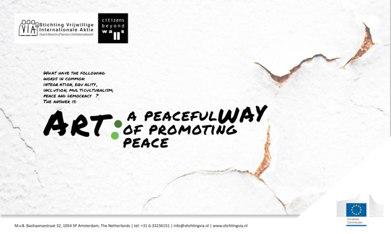

Projecten
Overig
Call for artists!

What have the following words in common: integration,equality,inclusion, multiculturalism, peace and democracy?
The answer is 'Art : a peaceful way of promoting peace'
Do you care about people, equality and human rights? Are you aware of the damage that Europe suffers from the rise of 'xenophobia'? Are you an artist from the Netherlands? Then you should definitely join the new international project “Citizens Beyond Walls”! This project takes place in Utrecht (The Netherlands) in July 2014.
International project “Citizens Beyond Walls”
Since December 2013, Stichting VIA is taking part in an EU Project called 'Citizens Beyond Walls' led by SCI Italy. The projects' action, spans over 16 months and involves 8 EU countries (Italy, Hungary, the Netherlands, Greece, Bulgaria, Serbia, Spain and Germany).The project aims in activating European Citizens and fostering inclusive policies with particular focus on new citizens and minorities; whilst respecting Citizens Rights in Europe.
TOPIC
The Peace Nobel awarded European Union, is facing a growth of Parliamentarian, Extra-Parliamentarian and civil society groups, hindering the process of inclusion for 'new citizens' (e.g. immigrants) and marginalized groups (e.g. LGB,Roma). Such groups have been able to influence media narratives aboard the ability to affect national policies; thus, endangering the presence of peace and growth of the European Union and the European 'ideal'. Such exclusionary activities are a threat for peace in Europe, where peace is not only absence of conflict,but the condition where citizens' are equally endowed with rights.
METHODOLOGY
The last part of the project involves 8 Residential Peace Weeks taking place in each participant country (Italy, Hungary, the Netherlands, Greece, Bulgaria, Serbia, Germany and Spain).During the Peace Week in the Netherlands, we are dealing with the research outcomes by organizing public events, reflecting on the European Memory of the past; allowing citizens to exchange ideas and advocating for citizens' rights with policy makers.
Past practice and current research, have identified Art as a powerful and peaceful 'medium'; able to raise/spread awareness of social and political issues; whilst promoting egalitarian ideas and fostering peace.
StichtingVIA is looking for exciting art works answering to the topic of 'Citizens Beyond Walls' for an Art exhibition. We are inviting submissions for the 'Peace Week', which will take place in July 2014 in Utrecht,The Netherlands.
AIMS
- To raise awareness by presenting a clear overview of the current situation in The Netherlands with regard to the existing movements (political and extra-parliamentary) hindering the rights of the citizenship
- To provide the participants of the Peace Week and activists -in general- with adequate and non-violent tools (good practice), providing the ability to counter the growth of the existing political movements (as described above)
CRITERIA
Open to all artists 18 and older.
Mediums and style accepted, include:drawings,paintings,pastel,printmaking,photography,film (must be between 3mins – 40 mins)
You are motivated about the topic, open to cultural differences and have an understanding of different issues and cultures.
NOTE: An artist is not expected to be an expert in political/social issues. In order to apply, you need to be interested in the topic, be open-minded and willing to promote the ideas of this Project via your Art.
If participating in this project interests you, please send a motivation letter /description of your 'Art piece' A4 + CV to :This email address is being protected from spambots. You need JavaScript enabled to view it.
COST
There is no fee for submitting your Art work
Submission Details :
Delivery : No logistical costs will be paid, but collection of Art work is possible, upon agreement
Reception:2nd Week of July 2014
Duration of Exhibition : TBC
Pick Up Artwork by : ASAP
Publicity:The Research & Empirical findings report is due to be published on the 1st September 2014, in Italy.
Sales:N/A
{kind=link}